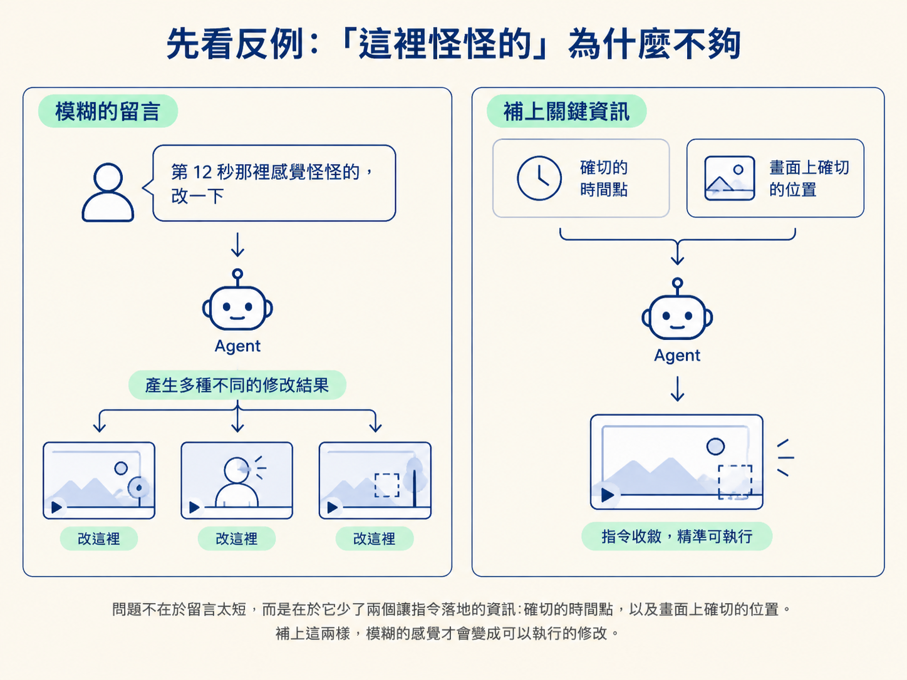
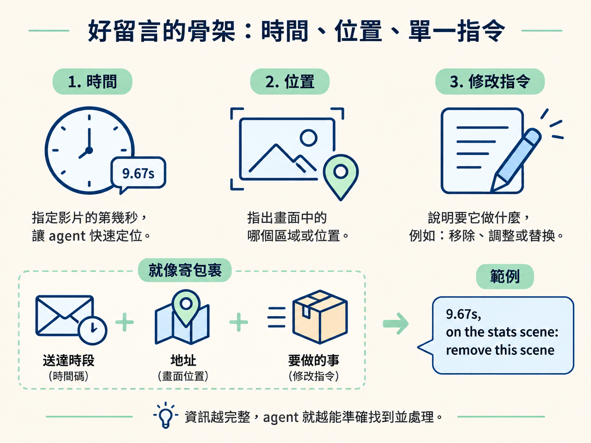
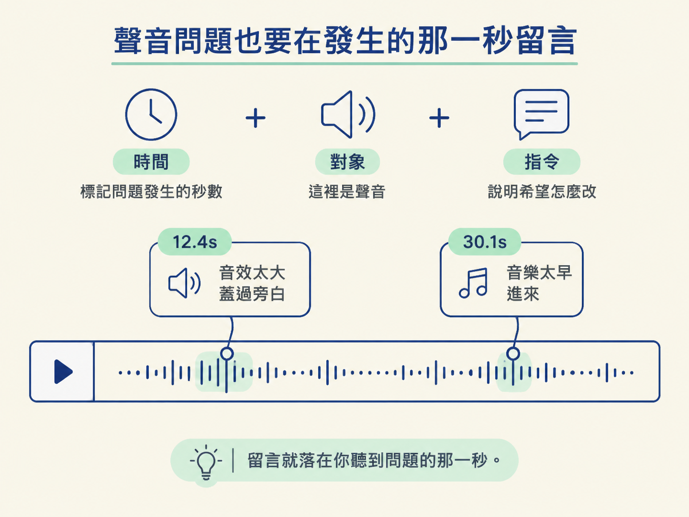

影片已經算出來了，接下來真正費腦的，往往不是「要不要改」，而是「要怎麼說，才能讓修改一次到位」。一句「這裡怪怪的」對人類或許還能勉強溝通，對 agent 卻像只丟了一張沒有地址的紙條：它知道有問題，卻不知道要找哪裡、改什麼。
這一課會把影片留言放回整條執導 pipeline 裡看：你要在已經算好的影片上，用時間碼定位問題，再給出一個明確、可執行的修改方向。學完後，你應該能寫出包含「第幾秒＋畫面哪裡＋單一明確指令」的留言，也能分辨它和分鏡留言的差別，甚至把聲音問題寫成同一種格式。
上一課我們確認了一件事：影片最後的 10–20%，要靠對「已經算好的影片」給回饋，才能補完。這一課接著處理一個更實際的問題：回饋到底要怎麼寫，才真的能交給 agent 執行？
你在分鏡階段已經寫過留言了，格式大致是「哪一幕、第幾秒、畫面的哪裡、要改成什麼」。影片留言和它是同一個家族，只是多了一個分鏡沒有的維度：聲音。
換句話說，骨架沒有變。你仍然要先定位時間與位置，再說明要改成什麼；只是看影片時，除了眼睛，也要把耳朵加入檢查清單。
最直覺的寫法，可能是打開聊天視窗，輸入：「第 12 秒那裡感覺怪怪的，改一下。」
對人來說，這句話或許還能靠上下文猜一猜；但對 agent 來說，它幾乎沒有提供可執行的資訊。第 12 秒到底是哪個東西怪？是位置、大小、顏色，還是出現的時機？「改一下」又代表什麼方向？同一句話，可能做出十種不同結果，而你可能一種都不滿意。
問題不在於留言太短，而在於它沒說清楚兩件事：確切的時間點，以及畫面上確切的位置。補上這兩樣，模糊的感覺才會變成可以執行的修改。

一則好的影片留言，通常包含三個部分：
前兩項通常會由回饋介面自動帶入，所以你真正需要動腦寫的，就是最後一項。下面這則是真實的影片留言，可以直接當成範本：
9.67s, on the stats scene: remove this scene拆開來看，9.67s 是時間點，on the stats scene 指出畫面位置與情境，最後的 remove this scene 才是實際要執行的修改。
整句不到十個字，卻已經精準到 agent 不需要猜。這就像寄包裹：時間碼是送達時段，畫面位置是地址，修改指令則是你要它做的事。少了地址，再禮貌的請求也很難送到正確的地方。

分鏡留言和影片留言的核心骨架其實一樣，都是「時間＋位置＋指令」。差別在於，分鏡是一張靜態畫面；影片則會動，也會發出聲音。
| 分鏡留言（Level 2） | 影片留言（Level 3） | |
|---|---|---|
| 回饋對象 | 靜態的某一幕 | 會動、有聲音的影片 |
| 時間與位置 | 幕次＋秒數＋點擊座標 | 秒數＋點擊座標 |
| 能不能講聲音 | 不行，分鏡沒有聲音 | 可以，就在你聽到的那一秒留言 |
所以，如果你已經會寫分鏡留言，寫影片留言不需要重新學一套語言。你只要記得：影片多了一條時間軸，也多了一個可以檢查的聲音層。
執導時常見的三個面向：畫面、聲音、剪點，都可以用「時間＋位置＋單一指令」來描述。下面幾則留言，示範了不同類型的問題。
4.55s, top of the frame: when i say comprehensive guide just show the page and focus on the title of the page: https://platform.claude.com/docs/en/build-with-claude/prompt-engineering/prompting-claude-opus-5-5這是一則「畫面＋時機」型的留言。它指定了 4.55 秒、畫面頂部，並說明講到「comprehensive guide」時，要改成顯示那個頁面，焦點放在頁面標題上。
它甚至附上了連結，把「你要的是哪個頁面」說清楚。這能避免 agent 自己猜測素材，也讓「顯示哪個頁面」和「要聚焦哪裡」都變得明確。
29.29s, centre: when highlighting please zoom in to the text這是一則「動作細節」型的留言：在 29.29 秒、畫面中央做 highlight 時，請把文字放大。
這類問題往往要等影片動起來才看得出來。分鏡上的 highlight 可能看起來沒有問題，但播放後才發現鏡頭不夠聚焦、觀眾看不清楚重點。影片留言的價值，就是把這種「靜態看不出來、動態才發現」的問題，準確釘在時間軸上。
聲音問題使用的句型完全一樣。重點是：在你聽到問題的那一秒就留言。
例如：
你不需要描述頻率或分貝。只要指出時間、問題所在的對象（這裡是聲音），以及希望它改成什麼。聲音在時間軸上找得到，留言就能派上用場。

初學者很容易把一整串問題塞進同一則留言：「第 12 秒標題擋到臉、順便把它縮小、顏色也換一下、還有音樂太大聲。」
這樣寫有兩個問題。第一，agent 很難判斷你最在意的是哪一項。第二，等你回頭確認這一輪修改時，也無法一項一項核對。
比較好的做法，是拆成好幾則短留言，每一則只描述一個明確修改。稍後你仍然可以一次把所有留言打包送出去；拆開反而更容易追蹤，也比較像一張張可以勾選的待辦事項。
留言不一定要透過專門的介面。你也可以像下面這樣，直接把清單打進聊天視窗：
here are my notes on the animated video. fix each one, then render it again.
- 0:42 - the title covers my face, move it to the left
- 1:15 - show the AssemblyAI logo when i say AssemblyAI
- 2:30 - this graphic stays on too long, take it off when i finish the sentence
change only what i listed and keep everything else exactly as it is.這種寫法完全可行，也示範了最後一句「只改我列出的，其他原封不動」。那是下一課之後會再放大的重點。
不過手打也有代價：每一則留言都要自己記時間、自己輸入文字。影片一長、留言一多，就像拿著尺在畫面上逐格量位置，容易慢下來，也容易寫錯。能夠點擊影片、自動帶入時間與位置的介面，通常會省事得多；那個介面就是下一課的主角。
好的執導留言帶著三個部分：第幾秒、畫面哪個位置、要改成什麼。前兩項通常由介面自動帶入，你只要寫清楚最後一項。影片留言和分鏡留言是同一個家族，只多了「聲音」這個維度：在你聽到問題的那一秒留言，用同一種句型即可。一則留言只講一件事，需要時拆成好幾則，最後再打包送出。
現在你已經知道一則好留言該長什麼樣，也能用同一個骨架處理畫面、動作與聲音問題。下一個問題是效率：如果一支影片有二、三十則留言，總不能每次都自己報時間、自己打字。下一課會介紹一頁專門用來回饋的 review page，讓你在上面播放、點選時間與位置，再把留言收集成一批。